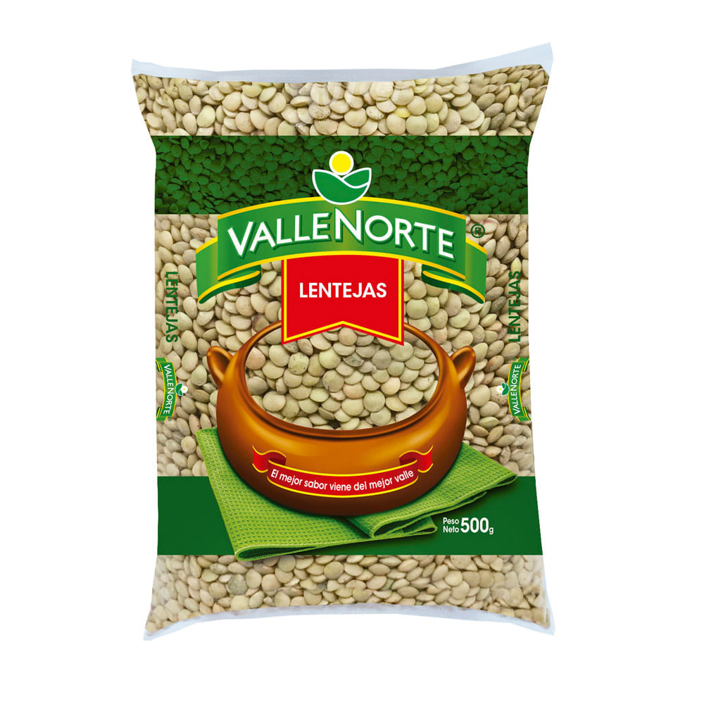

LEGUMBRES
 |
$2.200La arveja, (Pisum sativum, L.) es uno de los cultivos más antiguos de la humanidad. Hay evidencias del consumo de arvejas silvestres unos 10.000 años antes de Cristo, que fueron descubiertas por arqueólogos que exploraban la “Cueva Espíritu” en la frontera entre Burma y Tailandia. En una excavación arqueológica en Jarmo, al noreste de Irak, se encontraron arvejas que datan unos 7.000 a. C. Los restos arqueológicos de los pueblos de la Edad de Bronce en Suiza contienen rastros de arvejas de los años 3.000 a.C. La arveja fue la planta con la que Gregorio Mendel, en 1860, estudió los caracteres de la herencia y reconoció que algunos rasgos de la arveja eran dominantes, mientras que otros eran recesivos; los resultados de sus experimentos condujeron a las leyes básicas de la herencia y así nació la ciencia de la genética. La arveja pertenece a la familia de las leguminosas, al igual que el fríjol, el garbanzo y la lenteja. La arveja es muy apreciada y valorada por su calidad nutricional y el aporte a la salud de los consumidores. Se consume fresca o verde y también en estado seco. Las arvejas son ricas en proteínas y carbohidratos, bajas en grasa y constituyen una buena fuente de fibra, vitaminas A, B y C; cuando se consumen frescas o refrigeradas, suministran tiamina y hierro. La fibra de la arveja es soluble en agua, promueven el buen funcionamiento intestinal y ayudan a eliminar las grasas saturadas. Además, la arveja proporciona energía que hace permanecer más tiempo la glucosa en la sangre. En su La arveja historia e importancia El cultivo de la arveja, estado fresco es tal vez el vegetal más rico en tiamina (vitamina B1), esencial para la producción de energía, la función nerviosa y el metabolismo de los carbohidratos.
|
 |
$6.700El concepto de la bolsa de frijol ha estado alrededor por siglos. Originalmente un simple juguete para los niños, se ha evolucionado en los muebles, un calmante para el dolor y aunque no sea de arma letal. Hoy en día, muchos de los materiales además de los frijoles se utilizan para llenar bolsas de frijol.
la Historia de Bolsas de Frijol
Es difícil, si no imposible, identificar cuándo fue la primera vez que alguien se llena una bolsa de tela con frijoles, arroz o arena y se la dio a un niño con un juguete, pero las bolsas de frijol han sido de alrededor de casi tan larga como han sido los niños. Malabares empezó alrededor de 2000 B. C., y hoy comienzo malabaristas suele comenzar con bolsas de frijoles como desarrollar la coordinación mano-ojo necesarios para realizar la tarea de hacer juegos malabares. |
 |
$3.600Se cree que se originaron en el Cercano Oriente o en la zona del Mediterráneo, las lentejas han sido una fuente de sustento para nuestros antepasados desde tiempos prehistóricos. Son la legumbre más antigua conocida por el hombre y uno de los primeros cultivos domesticados. La palabra lentejas viene del latín lente, y de hecho, este primo de frijol tiene la forma de la lente óptica doble convexa que tomó su nombre de la lenteja.
Se han encontrado artefactos de lentejas en excavaciones arqueológicas en las orillas del río Éufrates que se remontan al año 8.000 a. C. y hay evidencia de que los egipcios, romanos y hebreos comieron esta leguminosa. Las lentejas también se mencionan varias veces en la Biblia; un ejemploestá en el libro del Génesis y en la historia de Esaú, quien renunció a su primogenitura por un cuenco de lentejas carmesí y una hogaza de pan. |
 |
$3.300El maíz o zea mays es un cereal, una planta gramínea americana, que se caracteriza por tener tallos largos y macizos (y no huecos como sus parientes más cercanos) al final de los cuales se dan espigas o mazorcas (inflorescencias femeninas), con sus semillas o granos de maíz dispuestos a lo largo de su eje.
|
 |
$2.200El arroz japonés o japónica es una variedad de arroz de grano corto, que se caracteriza por su textura única y su carácter pegajoso. Viene también en una variedad llamada mochigome (arroz glutinoso) que se usa para elaborar mochi (postre Japones). Se vende como arroz integral (genmai), que debe ser pulido a máquina (seimaiki), o ya pulido. El arroz integral germinado (hatsuga genmai) se vende en menor cantidad. Tiene una textura más suave que la del arroz integral y un aroma agradable, reteniendo todas las características saludables. La mayoría de los supermercados de Japón venden arroz pulido en bolsas de 10 kg, 5 kg o menor cantidad. El arroz integral suele venderse en bolsas de 30 kg. El arroz japónica no debe confundirse con la variedad Japonica, un cruce del arroz largo tailandés con el suave y pegajoso arroz japonés.
En zonas rurales de Japón es frecuente encontrar lugares con una máquina automática para pulir el arroz integral, llamada seimaijo. El subproducto del proceso de pulido, el salvado (komenuka), puede usarse para elaborar un tipo de encurtido llamado nukazuke o reciclarse como fertilizante. |
 |
$2.600También en su Historia Natural, Plinio, cuenta un remedio para que desaparecieran las verrugas, el cual consistía en poner dentro de una bolsa tantos garbanzos, alubias o granos de trigo como verrugas tuviera el individuo en cuestión, la cual debía tirarse por encima del hombro izquierdo, como vemos los prohombres de la antigüedad eran supersticiosos en extremo y también incultos vistos desde nuestra perspectiva.. |